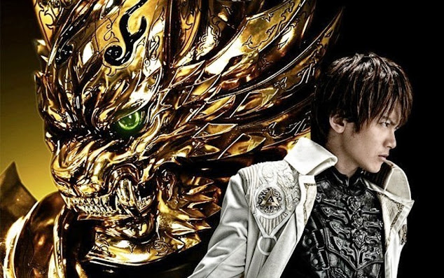
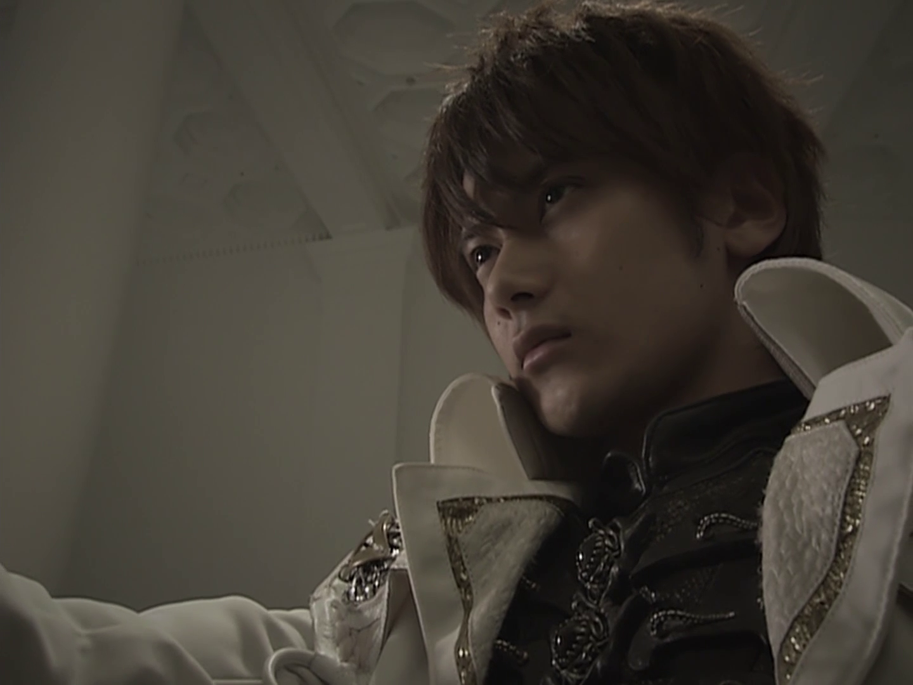
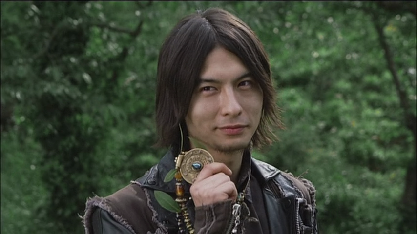
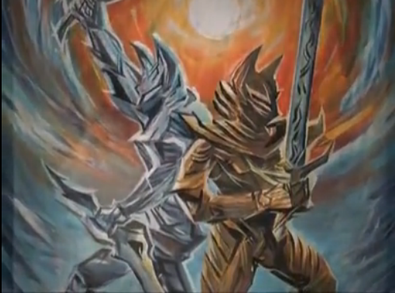
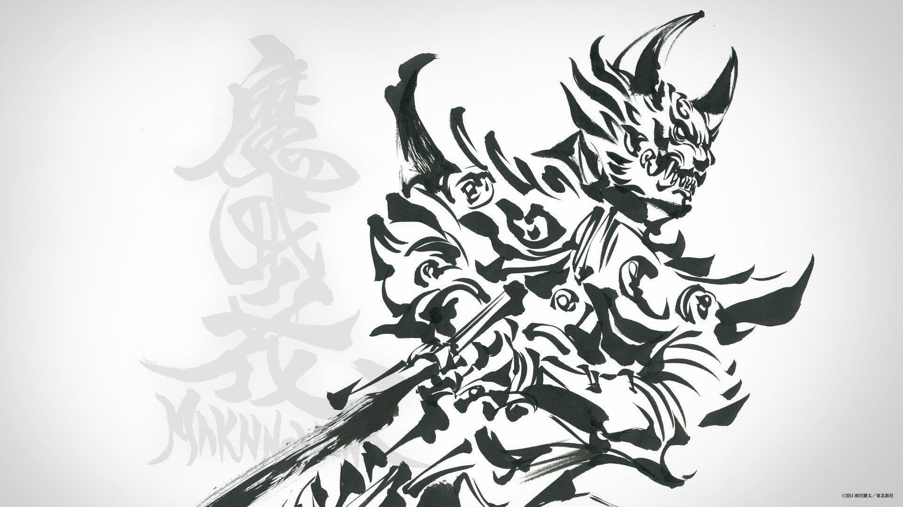

Opnião da equipe: GARO
Saiba a opinião da equipe sobre a série do cavaleiro da armadura dourada
.png)
Opnião da equipe: KAMEN RIDER WIZARD
Saiba a opinião da equipe sobre Wizard
.png)
Review: KAMEN RIDER BLACK
Análise sobre o antigo e classico Kamen Rider Black
Opnião da equipe: GARO
O cavaleiro dourado GARO (nome cringe eu sei) é um tokusatsu voltado para o público adulto que começou lá pra 2005, que por mais que 16 anos dps de seu lançamento ainda é uma série que envelheceu bem ao meu ver.

Garo é sobre saejima Kouga nas suas desventuras para matar uma raça do mal chamado horrors, que devora humanos, e surgem de portais, objetos (ou até lugares) que são possuídos por energias do mal e são usadas como ponte para eles entrarem e possuírem pessoas no mundo humano. Eles são caçados e encontrados por pistas que pessoas com grande poder espiritual conseguem observando portais, e essas pistas são dadas aos cavaleiros makais para destruir os horros. É claro desde o começo que eles nunca vão deixar de existir e vão continuar sendo do mal e para isso existem cavaleiros makais espalhados pelo mundo que vão lutar contra eles pra sempre.

Cavaleiro makais são humanos que são de uma linhagem específica de pessoas que o pai era um cavaleiro makai e passou o cargo para ou um filho ou um jovem de confiança. O Garo, gatinho de armadura dourada, atual é filho de taiga saejima, uma honroso cavaleiro makai que foi devorado por um horror em uma luta. Por sua morte prematura, o cargo de GARO cai sobre o seu filho e ele começa a treinar cedo demais para suceder o posto do seu pai.

No primeiro episódio saejima Kouga, numa caçada de um horror, acaba envolvendo uma pessoa comum numa luta makai e ela é atingida pelo sangue amaldiçoado de um horror, e por isso ela tem que ser morta. Saejima ao invés de mata-la, diz que vai manter ela por perto para atrair horrors e deixar a caçada mais fácil, pois humanos manchados pelo sangue de horrors atraem mais horrors.

A série se encontra totalmente legendada em português na Amazon Prime Vídeo, um serviço de streaming pago. Não disponibilizaremos o link pois entrar no site da Amazon eles te incentivam assinar o serviço deles. Como alternativa, como um modo não oficial, a série se encontra legendada pela equipe "TrollFansubs". Fica a seu críterio a escolher como você vai assistir
Comentar nossa opnião sobre GARO é um assunto muito divertido, pois é um tokusatsu que todos viram e gostaram. Se deixar levar ficamos 3 dias aqui, então é melhor parar por aqui, obrigado por lerem!

redator da vez:
Dime
"eu sou uma moeda."
direitos reservados a: @samuloko_